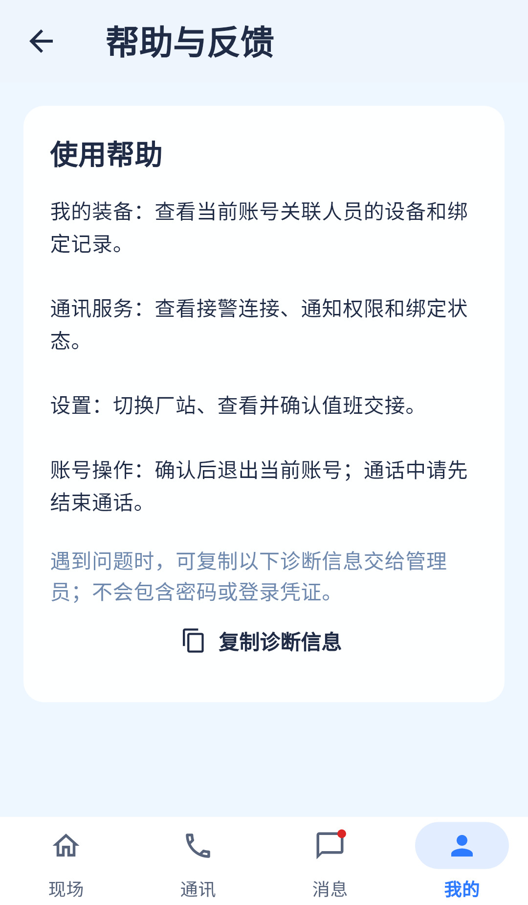

帮助内容部分覆盖，FAQ交互和诊断展示待补；设计没有要求建立意见提交后台。
相同 · 已有基础
使用说明与复制诊断信息已有，明确不含密码凭据。
不同 · UI与场景
当前整段静态说明，设计为四个问题入口+独立反馈卡；版本/厂站/通知只在复制结果中，未显示字段行。
01 / 先看 UI
两图显示宽度统一；设计390px与当前360逻辑宽的画布不同。各图可独立滚动到底，点击“原图”放大。


使用既有组件截图；业务数据为示例。
02 / 逐项核对功能与小交互
入口：我的 → 帮助与反馈 · 当前形态：子页面
| 编号 | 部位 | 设计要求 | 当前UI | 功能结论 | 下一步 |
|---|---|---|---|---|---|
| 36-01 | 头部 | 帮助与反馈插画/Logo | 当前普通标题 | UI缺口 | 统一子页头部 |
| 36-02 | 装备帮助 | 如何查看装备 | 当前文字段落 | 已有内容，没有可展开条目 | 拆可读FAQ项，链接我的装备 |
| 36-03 | 通知帮助 | 收不到通知怎么办 | 当前只说查看通讯状态 | 部分：缺排查步骤 | 补权限/绑定/网络步骤，链接33/37 |
| 36-04 | 切站帮助 | 如何切站 | 当前静态说明 | 已有内容 | 补设置入口与通话保护提示 |
| 36-05 | 交接帮助 | 如何完成值班交接 | 当前简短设置说明 | 部分：缺阅读事项和接班权限步骤 | 补35路径及说明 |
| 36-06 | 账号帮助 | 参考未单列 | 当前有通话结束后退出说明 | 已有额外内容 | 保留 |
| 36-07 | 诊断展示 | 版本/厂站/通知状态 | 当前页面未展示三行 | 部分：复制文本包含这些数据 | 先可见再复制，长厂站换行 |
| 36-08 | 复制 | 复制诊断信息 | 当前Clipboard.setData并提示 | 已有代码：不包含密码token | 保持，不假称反馈已提交 |
| 36-09 | 反馈边界 | 交给管理员 | 当前无独立意见表单/上传服务 | 符合当前图示边界 | 后续如需工单反馈另立需求，不算本图缺功能 |
源码依据
mine_page.dart:697,719
链接为随报告保存的带行号快照；行号对应分析时源码。以函数和字段共同定位，不能将请求代码视为执行成功证据。